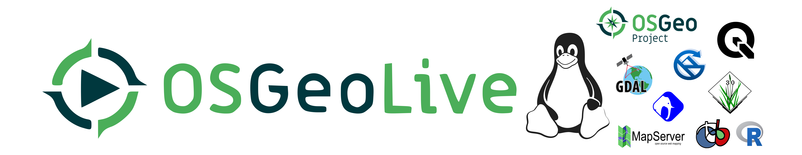

class: center, middle, inverse, title-slide # Curso de cartografía automatizada sesión 002 ## <br/>UNMSM <br/>Antony Barja ### Geographer Freelance <br/><br/> <a href="https://github.com/barja8" > barja8.github</a> ### Lima, 2019-09-09 --- background-size: cover class: center, middle, inverse # Geographical data mining --- # Minería de datos geográficos:La nueva moneda .pull-left[ Según **Openshaw**, profesor de Centro de Geografía Computacional de la Universidad Leeds en Reino Unido,este término hace referencia a **la inmensa explosión en los datos geográficos** ocasionados por el desarrollo en la tecnología informática, sensores remotos, Mapeo digital y la difusión global del SIG. <img src="img/geocomputation.jpg" width="481" /> <br> ##### _Paper de Openshaw_ [aquí](http://www.geocomputation.org/1999/051/gc_051.htm) ] .pull-right[ <img src="img/book.jpg" width="340" height="470" style="display: block; margin: auto 0 auto auto;" /> ] --- # Entonces: ## Geographycal Data Mining hace referencia: -- <br> * Al inmenso volumen de datos georreferenciados que se van generando de manera continua, y que hoy en día en su mayoria estan disponibles en fuentes abiertas dentro de mundo online de internet. </br> -- <br> * En esta nueva geografía aparece un nuevo espacio de relación, el **entorno digital**, al que denominamos **cibergeografía** (**Fuenzalida, Buzai, Jiménez, y de León Loza, 2015**). </br> -- <br> * No se trata de una nueva disciplina, sino de una evolución en lo que, quizás, sea el cambio más importante desde que Alexander Von Humboldt iniciará lo que se considera la geografía moderna (**Capel Sáez, 1981**). --- background-size: cover class: center, middle, inverse # Fuentes de información geográfica abierta --- # WorldPop Posee información espacial y temporal de la demografía a una resolución de 100m <img src="img/pop.PNG" width="950" height="410" style="display: block; margin: auto;" /> ##### _Link de WorldPop_ [aquí](https://www.worldpop.org/geodata/listing?id=29) --- # SRTM Modelos de elevación digital de terreno de 30 m <img src="img/srtm.png" width="950" height="410" style="display: block; margin: auto;" /> ##### _Link de SRTM_ [aquí](http://srtm.csi.cgiar.org/srtmdata/) --- # Jaxa DEM Modelos digitales de superficie de 30 m <img src="img/jaxa.png" width="950" height="410" style="display: block; margin: auto;" /> ##### _Link de Jaxa DEM_ [aquí](https://www.eorc.jaxa.jp/ALOS/en/aw3d30/index.htm) --- # Google Earht Engine Posee diferentes base de datos de imágenes satelitales entre las más inportantes destaca la serie de Landsat, MODIS y Sentinel. <img src="img/gee.jpg" width="950" height="410" style="display: block; margin: auto;" /> ##### _Link de GEE_ [aquí](https://code.earthengine.google.com/afb96dd57557f0c2b56693fdd15f8309) --- # Map the malaria atlas project Posee información sobre el tiempo de viaje que tarda una persona en trasladarce a una ciudad más cercana. <img src="img/map.png" width="950" height="410" style="display: block; margin: auto;" /> ##### _Link de Map the malaria atlas project_ [aquí](https://map.ox.ac.uk/trends/country) --- # Worldclim Datos de variables climáticas como la Pp, T y otras variables bioclimáticas <img src="img/clim.jpg" width="950" height="410" style="display: block; margin: auto;" /> ##### _Link de worldclim_ [aquí](https://www.worldclim.org/) --- # PISCOp <img src="img/pisco.png" width="950" height="410" style="display: block; margin: auto;" /> ##### _Link de datos PISCOp V2.1_ [aquí](https://piscoprec.github.io/webPISCO/spa/) --- # SoilGRID Contiene información sobre el tipo de suelo y la taxonomía del suelo <img src="img/soilgrid.png" width="950" height="410" style="display: block; margin: auto;" /> ##### _Link de SoildGRID_ [aquí](https://soilgrids.org/#!/?layer=ORCDRC_M_sl2_250m&vector=1) --- # OpenLandMap Contiene información de diferentes tipos de cubiertas de la superficie terrestre como NDVI, TWI, litología, Pendiente, etc. <img src="img/openland.png" width="950" height="410" style="display: block; margin: auto;" /> ##### _Link de OpenLandMap_ [aquí](https://openlandmap.org) --- # OSM Contiene información vectorial de libre acceso <img src="img/osm.png" width="950" height="410" style="display: block; margin: auto;" /> ##### _Link de OSM_ [aquí](https://www.openstreetmap.org/#map=5/-9.297/-75.015) --- # OSM Landuse/Landcover Base de datos de OSM que contiene información sobre el uso del suelo a nivel global. Actualmente sigue en desarrollo y posee un total de 13 clases de entre ellas destacan zonas urbanas,zonas industriales, comerciales y de transporte,cultivos permanentes, etc <img src="img/osmland.png" width="950" height="390" style="display: block; margin: auto;" /> ##### _Link de OSM Landuse/Landcover_ [aquí](https://osmlanduse.org/?fbclid=IwAR3YsM4Q6a9VGZiO11P4SLM_qS2-JlKmt0TEnhfX1g6S2sfYiHOnV5fnKMk#12/-77.03643/-12.0107/0/) --- background-size: cover class: center, middle, inverse # Práctica --- # Descargar modelos de elevación digital desde QGIS <img src="img/srtmqgis.png" width="970" height="500" style="display: block; margin: auto;" /> --- # Descargar datos de poblacion desde QGIS <img src="img/pop.png" width="970" height="500" style="display: block; margin: auto;" /> --- # Descargar datos de OSM <img src="img/OSM.png" width="970" height="500" style="display: block; margin: auto;" /> --- # Descargar de sentinel 2 <img src="img/SentinelHub.png" width="970" height="500" style="display: block; margin: auto;" /> --- # Descargar datos de sp <img src="img/species.png" width="970" height="500" style="display: block; margin: auto;" /> --- # Descargar datos de flora y fauna <img src="img/gbif.png" width="970" height="500" style="display: block; margin: auto;" /> --- # Descargar datos de Landsat, Sentinel,Modis y ASTER <img src="img/scp.png" width="970" height="500" style="display: block; margin: auto;" /> --- # Descargar datos de OpenEO <img src="img/openEO.png" width="970" height="500" style="display: block; margin: auto;" /> --- background-color:cover class:center # GRACIAS! <div> <img src="img/avatar02.png" width="260" height="260" style="float: none;"/> <br/> <br/> <div> <img src="img/git.png" width="34" height="34" style="float: none;" /> <a href="https://github.com/barja8" >barja8.github</a> </div> <div> <img src="img/Twitter.png" width="28" height="28" style="float: none;" /> <a href="https://twitter.com/AntonyBarja1">Antony.Barja</a> </div> <div> <img src="img/gmail.png" width="30" height="30" style="float: none;" /> <a href=mailto:"antony.barja8@gmail.com">antony.barja8</a> </div> **Slides created via the R package** [**xaringan**](https://github.com/yihui/xaringan)